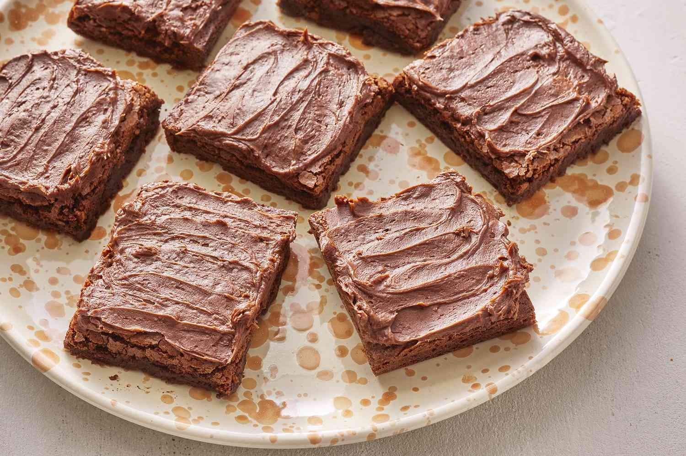

Home Page
Brownies

This brownie recipe makes rich, fudgy brownies that always turn out well.
Ingredients
- ½ cup all-purpose flour
- 1/4 cup unsweetened cocoa powder teaspoon salt
- 1/4 teaspoon baking powder
- ½ cup butter
- 1 cups white sugar
- 2 eggs
- 1 teaspoon vanilla extract
- ⅓ cup unsweetened cocoa powder
Directions
- Preheat the oven to 350 degrees F (175 degrees C). Grease and flour an 8-inch square pan.
- Melt 1/2 cup butter in a large saucepan. Remove from heat, and stir in sugar, eggs, and 1 teaspoon vanilla. Beat in 1/3 cup cocoa, flour, salt, and baking powder. Spread batter into prepared pan.
- Bake in the preheated oven until top is dry and edges have started to pull away from the sides of the pan, about 25 to 30 minutes. Let cool briefly before frosting.
Home Page